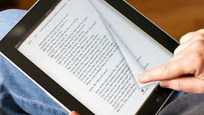

LIBROS
Los libros que se han hecho recientemente ya están en formato digital y solo es cuestión de convertirlos en el formato deseado como ePub o Mobi para que esté disponible como eBook para las diferentes plataformas, pero en el caso de libros impresos que no tienen su versión digital existen dos formas de digitalizarlos: El primero y más antiguo es por medio de la transcripción, que puede ser un poco tedioso ya que alguien tiene que escribir de forma manual letra por letra hasta pasar el libro completo. El segundo método es utilizar un software llamado OCR (Optical Character Recognition por sus siglas en inglés). Para utilizar este software es necesario primero escanear el libro y después pasarlo por este software. Existen impresoras sencillas y profesionales que te permiten hacer esto directamente, es decir, al momento de escanear las páginas automáticamente las pasa por el OCR para extraer el texto. Este método no es exacto y requiere de trabajo editorial en donde se hacen varias correcciones. En el caso de imágenes la única opción es escanear y dependiendo de la calidad que se sea necesario, es recomendable retocarlas ya que pueden aparecer con los puntos de impresión.
es cualquier texto almacenado en formato digital. Como tal, para leer esos libros son necesarios los programas denominados lectores, que pueden estar integrados en los ordenadores, teléfonos móviles o lo más reciente, lectores específicos basados en la tinta electrónica. Para nosotros ahí empieza lo interesante y lo que nos ocupará buena parte de este especial.